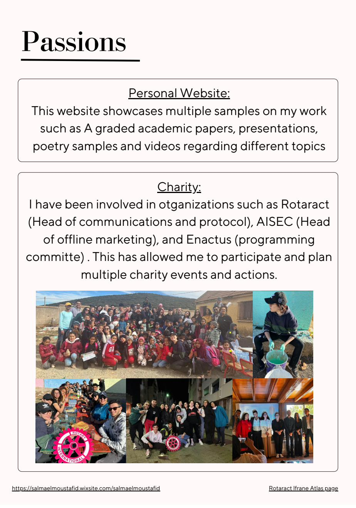
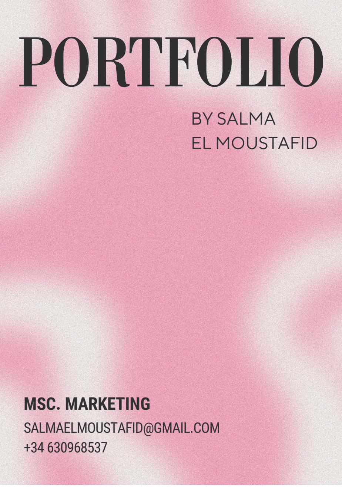
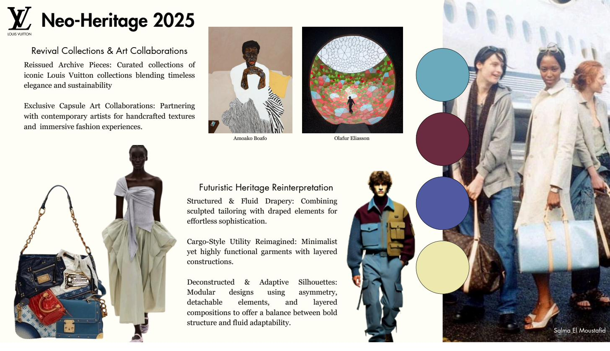

Artifacts
Click any project to see the work.

Navigating Cultural Sensitivity in Fashion
Master's Thesis · UC3M · 2025
How cultural symbolism in fashion branding affects Gen Z brand perception. Mixed-methods, 200+ participants.
View slides ↗

Gear9 Agile Management Report
Internship Report · AUI · 2023
Why are deadlines being missed? Sprint analysis across two live client projects with original KPI frameworks.
View report ↗

Nafas AI — App Design
AUI Capstone · Most Innovative Business Model 2023
AI-powered maternal healthcare app for Morocco. MVP interface designed in Figma.
View designs ↗

Poppi — Communication Strategy
UC3M · Communication & Advertising · 2024
Full advertising and communication strategy for Poppi prebiotic soda targeting Gen Z consumers.
View presentation ↗

Design Portfolio
AUI + UC3M · 2021–2025
Nafas MVP, Yallat Wallet MVP, Fiestas de la Paloma campaign, Voice in Action posters.
View portfolio ↗

Fiestas de la Paloma — Campaign
UC3M · Madrid · 2024
OOH and digital campaign for Madrid's beloved summer festival, targeting locals and tourists.
View campaign ↗